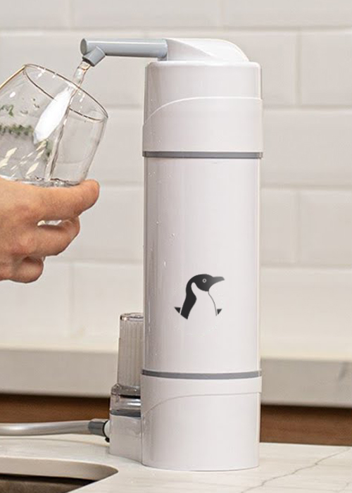

CA 450
Transforma tu grifo en una fuente de agua pura con nuestro avanzado filtro de agua. Equipado con tecnología de filtración de tres etapas, elimina el cloro, metales pesados y sedimentos, proporcionando un agua fresca y libre de contaminantes. Fácil de instalar y mantener, garantiza una experiencia de hidratación saludable y deliciosa en cada uso.